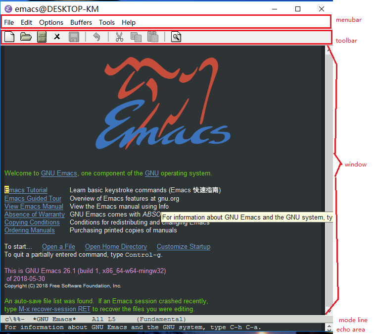
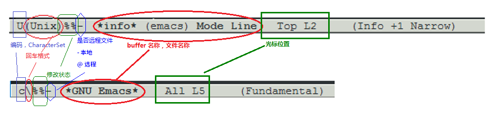

emacs 简单使用
- 参考
- CheatSheet
基本命令
- 说明
C-x是Ctrl-x，这里x是executing的意思。C-x C-h列出所有可执行命令的帮助
M-x命令名扩展。M-x 之后输入一个命令名。- 命令联想功能。在底部echo area 输入命令名称开头部分，按下 TAB 可以和shell自动补全命令。不用记住命令全称。
- C-x C-c
- 保存并退出程序
- C-x k
- 关闭当前buffer
- C-g
- 取消命令。如果 Emacs 对你的命令失去响应，你可以很安全地用
C-g来终止这个命令。C-g也可以被用来终止一个执行过久的命令。C-g还可以被来取消数字参数和那些输入到一半的命令。 C-x u或C-_- undo 撤销
- C-x C-f
- find file
- C-x C-s
- 储存当前文件
- C-x s
- 保存多个缓冲区
- C-x 0
- 关闭当前window
- C-x 1
- 关闭其他window，只保留当前window
- C-x C-left ， C-x left
- 跳转到前一个buffer
- C-x C-right ，C-x right
- 跳转到后一个buffer
M-x recover file<Return>- 恢复自动保存的文件。在提示确认的时候，输入 yes【回车】 就行了。
- C-SPACE 或 按住 SHIFT + 方向键
- 开始选择
- C-a
- 移动到行首
- C-e
- 移动到行尾
- C-k
- 移除从光标到“行尾”间的字符
- C-w
- 剪切
- M-w
- 复制
- C-y
- 粘帖
- C-d
- 删除光标后的一个字符
- C-x h
- 全选
常用设置文件
windows
installed packages
1 2 3 4 5 6 7 8 9 10 11 12 13 | company 0.9.9 installed Modular text completion framework counsel 20190127.451 installed Various completion functions using Ivy exec-path-from-... 20190106.307 installed Get environment variables such as $PATH from the shell go-imenu 20181029.1029 installed Enhance imenu for go language go-mode 20181012.329 installed Major mode for the Go programming language hungry-delete 20170412.102 installed hungry delete minor mode imenu-anywhere 20170805.1855 installed ido/ivy/helm imenu across same mode/project/etc buffers js2-mode 20180724.801 installed Improved JavaScript editing mode markdown-mode 20181229.1430 installed Major mode for Markdown-formatted text nodejs-repl 20181024.1654 installed Run Node.js REPL smart-tabs-mode 20160629.1452 installed Intelligently indent with tabs, align with spaces! smartparens 20190128.1747 installed Automatic insertion, wrapping and paredit-like navigation with user defined pairs. swiper 20190126.2035 installed Isearch with an overview. Oh, man! |
.emacs
;; Added by Package.el. This must come before configurations of
;; installed packages. Don't delete this line. If you don't want it,
;; just comment it out by adding a semicolon to the start of the line.
;; You may delete these explanatory comments.
(package-initialize)
(custom-set-variables
;; custom-set-variables was added by Custom.
;; If you edit it by hand, you could mess it up, so be careful.
;; Your init file should contain only one such instance.
;; If there is more than one, they won't work right.
'(ansi-color-names-vector
["#212526" "#ff4b4b" "#b4fa70" "#fce94f" "#729fcf" "#e090d7" "#8cc4ff" "#eeeeec"])
'(custom-enabled-themes (quote (tango-dark)))
'(custom-safe-themes
(quote
("bd7b7c5df1174796deefce5debc2d976b264585d51852c962362be83932873d9" default)))
'(package-selected-packages
(quote
(smart-tabs-mode imenu-anywhere go-imenu go-mode exec-path-from-shell nodejs-repl js2-mode smartparens counsel swiper hungry-delete company))))
(custom-set-faces
;; custom-set-faces was added by Custom.
;; If you edit it by hand, you could mess it up, so be careful.
;; Your init file should contain only one such instance.
;; If there is more than one, they won't work right.
'(default ((t (:family "微软雅黑" :foundry "outline" :slant normal :weight normal :height 120 :width normal))))
'(whitespace-space ((t (:background nil :foreground "#006633"))))
'(whitespace-tab ((t (:background nil :foreground "#006633")))))
;; 配置 emacs-china 源
;; http://elpa.emacs-china.org/
;; --------------------------------------------
(require 'package)
;; (let* ((no-ssl (and (memq system-type '(windows-nt ms-dos))
;; (not (gnutls-available-p)))))
;; ;; Comment/uncomment these two lines to enable/disable MELPA and MELPA Stable as desired
;; (add-to-list 'package-archives (cons "melpa" "http://elpa.emacs-china.org/melpa/") t)
;; (add-to-list 'package-archives (cons "gnu" "http://elpa.emacs-china.org/gnu/") t)
;; (when (< emacs-major-version 24)
;; ;; For important compatibility libraries like cl-lib
;; (add-to-list 'package-archives (cons "gnu" "http://elpa.gnu.org/packages/"))))
;; (package-initialize)
(setq package-archives '(("gnu" . "http://elpa.emacs-china.org/gnu/")
("melpa" . "http://elpa.emacs-china.org/melpa/")))
;; --------------------------------------------
;; Setting English Font
(set-face-attribute
'default nil :font "Consolas 14")
;; Chinese Font
(dolist (charset '(kana han symbol cjk-misc bopomofo))
(set-fontset-font (frame-parameter nil 'font)
charset
(font-spec :family "微软雅黑")))
;; 文件编码
(set-language-environment "UTF-8")
(set-default-coding-systems 'utf-8)
;; 高亮当前行
(global-hl-line-mode 1)
;; 设置高亮行背景色
(set-face-background 'hl-line "#444444")
;; 高亮行前景色使用当前theme的设置
(set-face-foreground 'highlight nil)
;; 显示行号
(global-linum-mode 1)
;; 禁止 Emacs 自动生成备份文件
(setq make-backup-files nil)
;; 关闭启动帮助画面
(setq inhibit-splash-screen 1)
;; 在GUI菜单中打开最近编辑过的文件
(require 'recentf)
(recentf-mode 1)
(setq recentf-max-menu-item 10)
;; 当你选中一段文字 之后输入一个字符会替换掉你选中部分的文字
(delete-selection-mode 1)
;; ----------------------------------------
;; -------- 缩进设置 ----------------------
;; 显示空格、tab、回车等控制字符
(require 'whitespace)
(setq whitespace-style '(face spaces tabs space-mark tab-mark))
(global-whitespace-mode 1) ; Enable whitespace mode everywhere
;; 一个TAB等于多少空格
(setq custom-tab-width 2)
;; 用TAB键时都用空格键space填充
;; 回车，自动缩进，`M-\` 删除缩进
(setq indent-tabs-mode nil)
(setq tab-width custom-tab-width)
;; (setq-default default-tab-width 'tab-width)
;; 设置Golang
;; (add-hook 'go-mode-hook
;; (lambda ()
;; (setq tab-width custom-tab-width)
;; (setq indent-tabs-mode nil)))
;; 或者，
(add-hook 'go-mode-hook
(lambda ()
(setq tab-width 4)))
基本的光标控制（BASIC CURSOR CONTROL）
1 2 3 4 5 6 7 | 上一行 C-p
:
:
向左移 C-b .... 目前光标位置 .... 向右移 C-f
:
:
下一行 C-n
|
- C-f
- 向右移动一个字符
- C-b
- 向左移动一个字符
- M-f
- 向右移动一个词【中文是移动到下一个标点符号】
- M-b
- 向左移动一个词【中文是移动到上一个标点符号】
- C-n
- 移动到下一行
- C-p
- 移动到上一行
- C-a
- 移动到行首， a 代表 ahead。
- C-e
- 移动到行尾，e 代表 end。
- M-a
- 移动到句首
- M-e
- 移动到句尾
M-<- （META 小于号）可以将光标移动到所有文字的最开头
M->- （META 大于号）可以将光标移动到所有文字的最末尾。
搜索
- C-s
- 是向前搜索。按下 C-s 之后，你会发现回显区里有“I-search”字样出现，这是在提示你目前 Emacs 正处于“渐进搜索”状态，正在等待你输入搜索字串。
会结束搜索。 或者 C-s 跳到下一个搜索到的位置。 - C-r
- 是向后搜索
编辑 - 基本文本编辑
C-x C-q- 切换只读模式/正常模式
输入
- 输入TAB
- 先按
C-q，再按TAB键
- 先按
删除
- 被删除的内容会缓存到剪贴板，使用
C-y可以粘帖出来。 C-k从当前位置删除到行尾，用的多。连续C-k的内容会在剪贴板合并，而不是后一次命令删除的内容覆盖前一次。
<Delback>- 删除光标前的一个字符
- C-d
- 删除光标后的一个字符
M-<Delback>- 移除光标前的一个词
- M-d
- 移除光标后的一个词
- C-k
- 移除从光标到“行尾”间的字符
- M-k
- 移除从光标到“句尾”间的字符
粘帖
- C-y
- 粘帖
替换
- M-x replace-string
- M-x replace-string 回车 要被替换的内容 回车 新的内容
M-x query-replace- 回车后根据要求输入目标字符串、新字符串。每次match都会询问，y - 替换；n - 不替换；
y!或者n!- 替换或不替换所有剩余的，No more asking
连续重复操作
先输入 C-u，然后输入数字作为参数，最后再输入命令。
1 | C-u 8 *，这将会插入 ******** |
复制、剪切、粘帖
Ctrl-Space- 鼠标选择 或者 键盘上箭头按键
Alt-w拷贝 ， 或者，Ctrl-w剪切Ctrl-y粘帖
Ctrl-Space 与输入法切换冲突的问题。
在~/.emacs文件中添加代码
1 2 | ;; C-SPACE 被输入法占用，C-@ 又太难按，于是把 set mark 绑定到 C-return (define-key global-map [C-return] 'set-mark-command) |
常用设置
配置文件
- Emacs 的配置文件默认保存在
~/.emacs.d/init.el文件中。（如果其不存在可自行创建， 配置文件也可保存在~/.emacs文件中）- 注意： 如果希望把配置放在
~/.emacs.d/init.el文件中，那么需要手工删除~/.emacs文件。 - 开始编辑配置文件：
C-x C-f ~/.emacs
- 注意： 如果希望把配置放在
- 在每次编辑配置文件后，刚刚做的修改并不会立刻生效。需要 重启编辑器 或者 重新加载 配置文件。
- 重新加载配置文件
- 在当前配置文件中使用
M-x load-file双击两次 回车确认默认文件名
- 在当前配置文件中使用
- Windows 上配置文件的位置：
C:\Users\your-username\AppData\Roaming\.emacs- 也可能文件名为
_emacs
- 也可能文件名为
M-x customize-group
Major mode vs Minor mode
- Major Mode 通常是定义对于一种文件类型编辑的核心规则，例如语法高亮、缩进、快捷键绑定等。
- Minor Mode 是除去 Major Mode 所提供的核心功能以外的额外编辑功能（辅助功能）。例如
tool-bar-mode与linum-mode。 - 一种文件类型同时只能存在一种 Major Mode 但是它可以同时激活一种或多种 Minor Mode。
C-h m或M-x describe-mode- 查看开启 的全部 Minor Mode
- 手动切换 Major Mode
M-x加模式名称-mode，例如，M-x lisp-mode。
- Major Modes
- Fundamental mode
- Normal Text or mark-up
- Text mode
- HTML mode
- SGML mode
- TeX mode
- Outline mode
- Programming Language
- Lisp mode
- C mode
- 与buffer用途有关的mode，不和具体文件相关
- Dired mode
- Message mode,
C-x m呼出 - Sehll mode
文件编码
1 2 | (set-language-environment "UTF-8") (set-default-coding-systems 'utf-8) |
Alt+x list-coding-systems- to see possible valid values.
简单的编辑器自定义
需要做的就是将其写入你的配置文件中 ~/.emacs.d/init.el 或者 ~/.emacs（优先级更高） 即可。
开始编辑配置文件： C-x C-f ~/.emacs
禁止 Emacs 自动生成备份文件
默认生成备份文件，文件名是原文件名 + ~ ，要修改这个设置，在配置文件中添加
1 | (setq make-backup-files nil) |
在GUI菜单中打开最近编辑过的文件
1 2 3 4 5 6 | (require 'recentf) (recentf-mode 1) (setq recentf-max-menu-item 10) ;; 这个快捷键绑定可以用之后的插件 counsel 代替 ;; (global-set-key (kbd "C-x C-r") 'recentf-open-files) |
默认全屏
1 | (setq initial-frame-alist (quote ((fullscreen . maximized)))) |
自动括号匹配（Highlight Matching Parenthesis）
1 | (add-hook 'emacs-lisp-mode-hook 'show-paren-mode) |
高亮当前行
1 | (global-hl-line-mode 1) |
https://stackoverflow.com/a/19555234
1 2 3 4 | ;; 设置高亮行背景色 (set-face-background 'hl-line "#444444") ;; 高亮行前景色使用当前theme的设置 (set-face-foreground 'highlight nil) |
更改字体
1 2 3 | ;; 更改显示字体大小 16pt ;; http://stackoverflow.com/questions/294664/how-to-set-the-font-size-in-emacs (set-face-attribute 'default nil :height 160) |
设置默认主题
1 | (load-theme 'the-theme-name 1) |
关闭工具栏
1 2 | ;; 关闭工具栏，tool-bar-mode 即为一个 Minor Mode (tool-bar-mode -1) |
关闭文件滑动控件
1 2 | ;; 关闭文件滑动控件 (scroll-bar-mode -1) |
输入即可替换选中部分的文字
1 2 | ;; 当你选中一段文字 之后输入一个字符会替换掉你选中部分的文字 (delete-selection-mode 1) |
JavaScript IDE
Emacs 提供的默认 JavaScript Major Mode 并不是非常好用。所以我们可以将默认的模式 替换成 js2-mode 一个比默认模式好用的 Major Mode。我们可以通过 MELPA 来下载它，然 后用下面的代码将其启用。
1 2 3 4 | (setq auto-mode-alist
(append
'(("\\.js\\'" . js2-mode))
auto-mode-alist))
|
在 js2-mode 模式中会提供
- 语法高亮
- 语法检查器（Linter）
执行缓冲区的代码可以使用 nodejs-repl 插件，它需要你的机器上已经安装了 NodeJS。 然而在 Mac OS X 上可能会出现找不到 NodeJS 可执行文件的问题，要解决这个问题你需要 安装另外一个 exec-path-from-shell 的插件并将其启用。
1 2 | (when (memq window-system '(mac ns)) (exec-path-from-shell-initialize)) |
有了 nodejs-repl 我们就可以方便的测试和开发我们的 JavaScript 代码了
设置命令
M-x auto fill mode<Return>- 启动或关闭自动折行模式。 Auto Fill 只在空白处进行断行。
行边界通常被设定为 70 个字符【这里指英文字符】，用C-x f命令来重新设定之。
指定新行边界可以用数字参数来进行传递。
如果你在段落的中间做了一些修改，那么自动折行模式不会替你把整个段落重新折行。
重新自动折行用M-q，注意使用的时候光标必须位于你想折行的那一段里。 M-x加模式名称-mode- 手动切换mode。 使用
M-x加模式名称-mode，例如，M-x lisp-mode。 - M-x linum-mode
- 显示行号
插件管理
- 进入插件管理界面
- 菜单栏 Options – Manage Emacs Packages ，或，
M-x package-list-packages或M-x list-packages - 正在使用的packages
C-h v package-activated-list，或，M-x list-packages再搜索C-s installed
插件源
MELPA 第三方源
MELPA （Milkypostman’s Emacs Lisp Package Archive）
安装
https://melpa.org/#/getting-started
- 配置文件中添加
~~~
(require ‘package)
(let* ((no-ssl (and (memq system-type ‘(windows-nt ms-dos))
(not (gnutls-available-p))))
(proto (if no-ssl “http” “https”)))
(when no-ssl
(warn “\
Your version of Emacs does not support SSL connections,
which is unsafe because it allows man-in-the-middle attacks.
There are two things you can do about this warning:- Install an Emacs version that does support SSL and be safe.
- Remove this warning from your init file so you won’t see it again.”))
;; Comment/uncomment these two lines to enable/disable MELPA and MELPA Stable as desired
(add-to-list ‘package-archives (cons “melpa” (concat proto “://melpa.org/packages/”)) t)
;;(add-to-list ‘package-archives (cons “melpa-stable” (concat proto “://stable.melpa.org/packages/”)) t)
(when (< emacs-major-version 24)
;; For important compatibility libraries like cl-lib
(add-to-list ‘package-archives (cons “gnu” (concat proto “://elpa.gnu.org/packages/”)))))
(package-initialize)
~~~
- 重启emacs后，执行
M-x package-refresh-contents或M-x package-list-packages，获取package list。
ELPA 中国镜像 elpa.emacs-china.org
elpa.emacs-china.org 是 Emacs China 中文社区在国内搭建的一个 ELPA 镜像
直接将下面的代码复制到你的配置文件顶端，从而直接使用 Melpa 作为插件的源。 你可以将你需要的插件名字写在 my/packages 中，Emacs 在启动时会自动下载未被安装的插件。
1 2 3 4 5 6 7 8 9 10 11 12 13 14 15 16 17 18 19 20 21 22 23 24 25 26 27 28 29 30 31 32 33 34 35 36 37 38 39 40 41 42 43 44 45 46 47 | (when (>= emacs-major-version 24)
(require 'package)
(package-initialize)
(setq package-archives '(("gnu" . "http://elpa.emacs-china.org/gnu/")
("melpa" . "http://elpa.emacs-china.org/melpa/"))))
;; 注意 elpa.emacs-china.org 是 Emacs China 中文社区在国内搭建的一个 ELPA 镜像
;; cl - Common Lisp Extension
(require 'cl)
;; Add Packages
(defvar my/packages '(
;; --- Auto-completion ---
company
;; --- Better Editor ---
hungry-delete
swiper
counsel
smartparens
;; --- Major Mode ---
js2-mode
;; --- Minor Mode ---
nodejs-repl
exec-path-from-shell
;; --- Themes ---
monokai-theme
;; solarized-theme
) "Default packages")
(setq package-selected-packages my/packages)
(defun my/packages-installed-p ()
(loop for pkg in my/packages
when (not (package-installed-p pkg)) do (return nil)
finally (return t)))
(unless (my/packages-installed-p)
(message "%s" "Refreshing package database...")
(package-refresh-contents)
(dolist (pkg my/packages)
(when (not (package-installed-p pkg))
(package-install pkg))))
;; Find Executable Path on OS X
(when (memq window-system '(mac ns))
(exec-path-from-shell-initialize))
|
Company 插件
- 安装
- 使用默认的插件管理系统（可在菜单栏 Options > Manage Emacs Packages 中找到）安 装 Company 插件
- 用途
- 一个用于代码补全的插件。
- 它的名字代表补全一切的意思（ Comp lete Any thing）。
- 配置激活
1 2
; 开启全局 Company 补全 (global-company-mode 1)
界面组成

mode line

- 回车格式
- (Unix)
- (‘\’) or (DOS)
- (‘/’) or (Mac)
- 修改状态
--没有任何修改**被修改了%%只读，且未修改%*只读，且已被修改
- buffer 名称
- 名称两头都是星号，表示这个buffer不与文件关联，只是内存上的内容。
emacs的常用命令
buffer 控制
- C-x C-b
- 列出所有buffers
- C-x C-s
- 保存当前buffer
- C-x k 或 M-x kill-buffer
- 关闭当前buffer
- C-x b
- 跳转buffer，在底部mode line上下箭头切换buffer，回车后跳转
- C-x C-left ， C-x left
- 跳转到前一个buffer
- C-x C-right ，C-x right
- 跳转到后一个buffer
- M-x revert-buffer
- 文件在编辑器外修改了，重载文件
windows 控制
- C-x 0
- 关闭当前window
- C-x 1
- 关闭其他window，只保留当前window
- C-x 2
- 向下分解当前window
- C-x 3
- 向右分解当前window
- C-x
< - 向左滚动当前window，这个功能默认关闭
- C-x
> - 向右滚动当前window，这个功能默认关闭
C-x {或C-x }- 向右 或 向左 扩大当前window宽度
- C-x
^ - 放大窗口
- C-x o
- 切换到其他窗口，类似Windows里面的ctrl-tab
外观
- C-x C–
- 缩小字体
- C-x C-+ ， C-x C-=
- 放大字体
- C-x C-0
- 恢复字体标准大小
debug
- C-x `
- 下一个错误
目录和文件
- C-x C-d
- list-directory
- C-x C-f
- find file
- C-x C-s
- 储存当前文件
- C-x s
- 保存多个缓冲区
- C-x d
- dired
帮助文档
- C-h t
- 进入tutorial
- C-h k
- 寻找快捷键的帮助信息
- C-h v
- 寻找变量的帮助信息，例如 C-h v package-activated-list
- C-h f
- 寻找函数的帮助信息
- C-h i m elisp
- 阅读Emacs Lisp官方文档
- C-h i
- 返回上一次的位置
- l
- 返回上一次的位置
- n
- 下一个文档节点（同一个level），可能会略过当前节点的子节点
- p
- 上一个文档节点（同一个level）
]- 下一个文档节点，顺次向下遍历
[- 上一个文档节点
- u
- 上一级文档节点
- 空格
- 向下翻页
- SHIFT + 空格 Backspace Del
- 向上翻页
^- 当前文章节点的父章节
- ENTER
- 跳转到链接目标
- M-x customize
- 配置相关的帮助
问题
在Windows上emacs卡顿
将默认字体设置为 微软雅黑 ，就流畅了。
- 菜单 Options - Set Default Fonts…
- 菜单 Options - Save Options
参考： https://emacs-china.org/t/topic/992/9
分别设置中英文字体
- http://emacser.com/torture-emacs.htm
- http://baohaojun.github.io/perfect-emacs-chinese-font.html
- https://blog.csdn.net/fengzizhuang/article/details/9526909
- https://blog.csdn.net/u011729865/article/details/72871116
;; Setting English Font
(set-face-attribute
'default nil :font "Consolas 14")
;; Chinese Font
(dolist (charset '(kana han symbol cjk-misc bopomofo))
(set-fontset-font (frame-parameter nil 'font)
charset
(font-spec :family "微软雅黑")))
在windows上启动，打开两个窗口
bin/emacs.exe 启动，打开两个窗口，使用 bin/runemacs.exe 则不会。